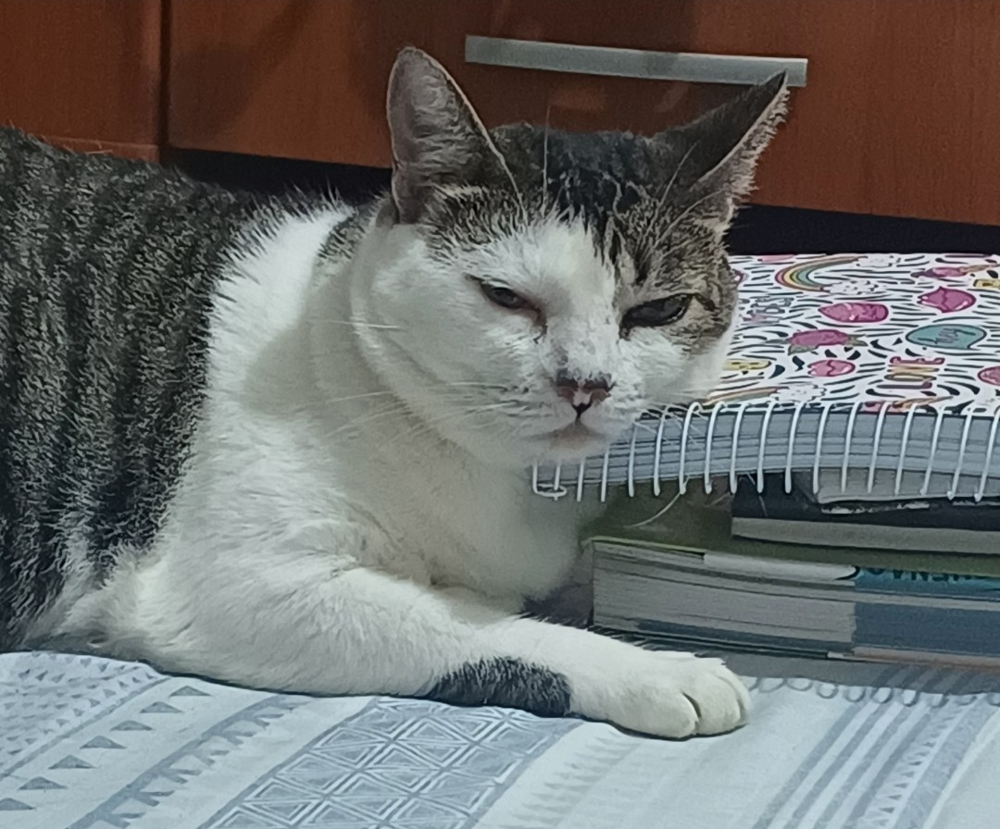
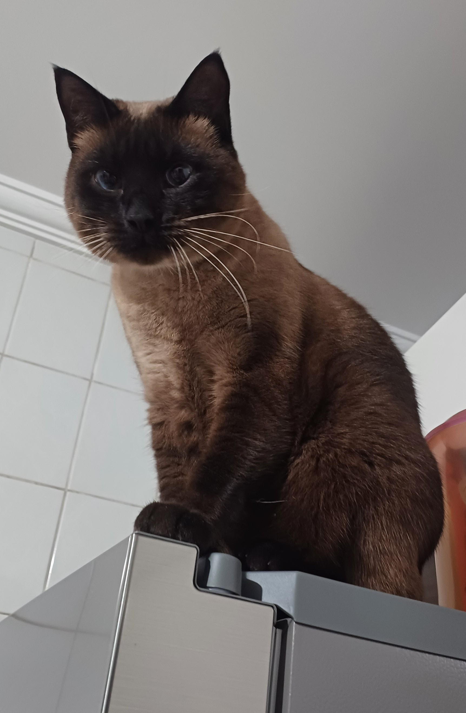
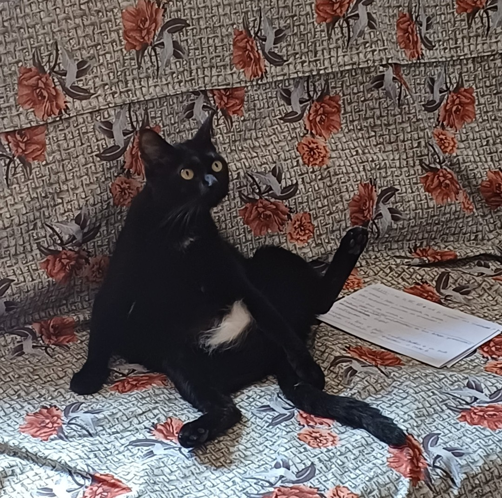
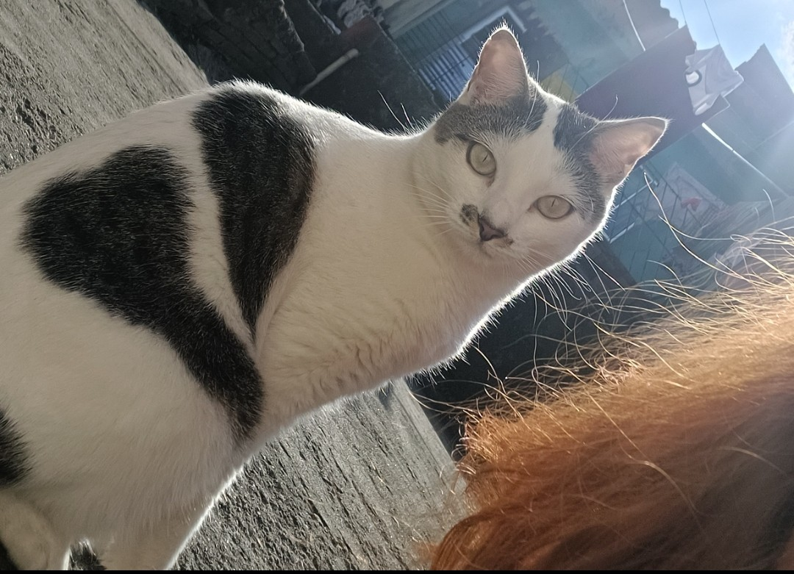
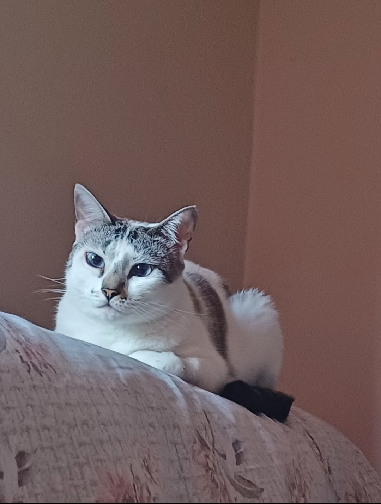
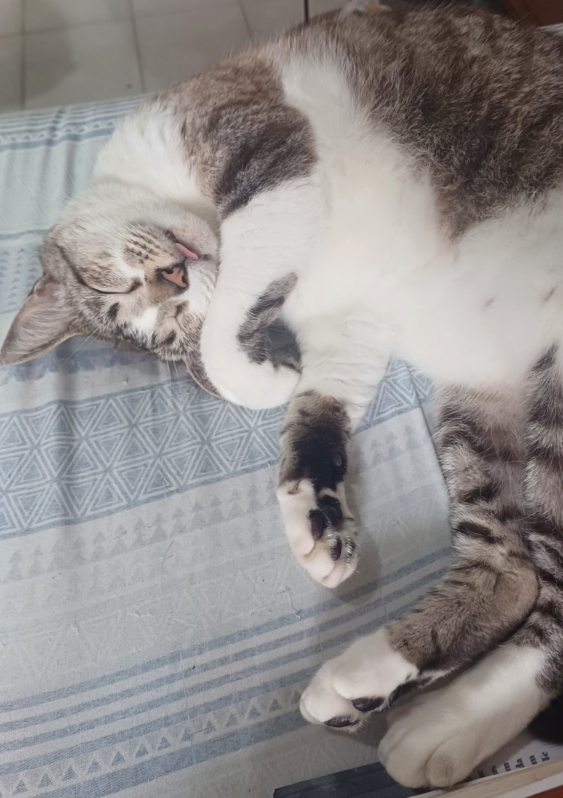
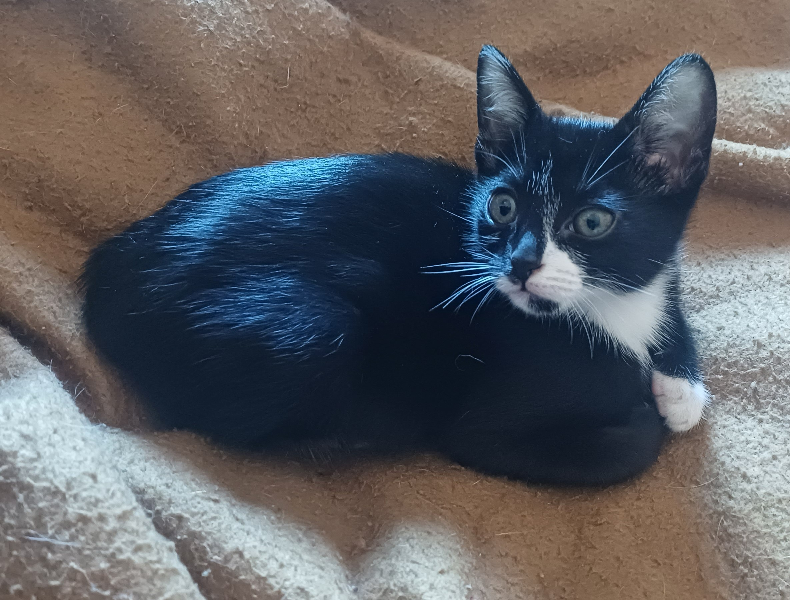

A DIRETORIA FELINA
Gatos
Histórias, fotografias e memórias dos seres que estiveram comigo em praticamente tudo.
Eles estiveram nos dias bons, nos ruins, nos silenciosos, nos absurdos e, principalmente, nos momentos em que ficar por perto era tudo o que precisava ser feito.

DIRETORA DE ACOMPANHAMENTO INTENSIVO
Soraya
Dona Soraya esteve por perto em momentos muito importantes da minha vida. Tem o talento de aparecer exatamente quando entende que atenção é necessária — mesmo quando ninguém pediu parecer técnico.
Entre carinho, fiscalização e presença constante, conquistou oficialmente seu lugar na diretoria.
DIRETOR DE OPERAÇÕES, LOGÍSTICA E MANIFESTAÇÕES PÚBLICAS
Paçoca
Caótico, barulhento e absolutamente convencido de que a casa funciona sob sua administração. Faz barraco por comida, fiscaliza a qualidade do prato, exige acesso imediato à “rua” e considera invasão territorial qualquer aparição do Juliano.
Apesar de toda a postura de síndico em surto, Paçoca é meigo, carinhoso e especialista em alternar entre o caos absoluto e momentos de puro chamego.
Filho da fundadora da instituição.


DIRETORA DE COMUNICAÇÃO, AVENTURAS E FORMAÇÃO DE NOVOS TALENTOS
Amora
Amora nasceu primeiro e, desde então, parece ter entendido que isso lhe conferia certos privilégios. Comunicativa, curiosa e interessadíssima nos acontecimentos da vizinhança, mantém seu posto de observação na janela e está sempre disponível para uma boa fofoca.
Gosta de aventuras, sobe onde pode — e onde provavelmente não deveria —, distribui tapas conforme critérios próprios e não aceita muito bem quando sua solicitação de carinho é recusada. Apesar da coragem performática, também é medrosa, meiga e carinhosa, desde que tudo aconteça nos termos dela.
Atualmente, exerce ainda uma função pedagógica: vem ensinando ao Frodo algumas das peripécias que ele definitivamente não precisava aprender.
Primogênita da fundadora da instituição.
Foi completamente apaixonada pelo senhor Luck. ❤️
DIRETORA DE RELAÇÕES INSTITUCIONAIS, CONVIVÊNCIA E OUVIDORIA
Pudim
Meiga, carinhosa e amiga de praticamente todo mundo, Pudim é adepta da política da boa vizinhança. Prefere relações pacíficas, convivência harmoniosa e, acima de tudo, tranquilidade.
Isso não significa, porém, que aceite desaforo — especialmente sonoro. Barulho alheio, perturbações desnecessárias e qualquer atentado contra sua paz são prontamente encaminhados à Ouvidoria, geralmente por meio de reclamações bastante enfáticas.
A mesma política se aplica ao carinho: quando solicitado, espera-se atendimento. A ausência injustificada do serviço também está sujeita a manifestação formal.
Filha da fundadora da instituição.
Possui um coração partido tatuado na barriga. 💔


DIRETORA DE HIGIENE, SEGURANÇA PATRIMONIAL E MEDIDAS RETALIATÓRIAS
Zildinha
Fofinha, conversadeira e um pouco tímida, Zildinha gosta de carinho e mantém uma relação bastante particular com a ideia de família: em sua interpretação, a mamãe é propriedade exclusiva e os demais moradores são, no máximo, tolerados.
Muito dedicada à higiene pessoal e à manutenção dos próprios padrões de limpeza, também possui limites bastante claros. Não leva desaforo, distribui tapas sem grande preocupação diplomática e, quando recebe uma bronca — inclusive quando está comprovadamente errada —, pode adotar medidas retaliatórias diretamente contra o patrimônio do responsável.
Cama, travesseiro, coberta e até o próprio cidadão estão sujeitos às consequências. Reclamações podem ser encaminhadas à Diretoria, embora provavelmente sejam ignoradas.
Atualmente enfrenta ainda um problema interno de autoridade: Frodo parece ter concluído que respeitá-la é opcional e vem se dedicando pessoalmente a provocá-la sempre que surge oportunidade.
Filha da fundadora da instituição.
Considera a mamãe patrimônio de uso exclusivo.
DIRETORA DE ASSUNTOS ESTRATÉGICOS, RESGATES EM ALTURA E CONFLITOS INTERPESSOAIS
Jujuba
Pequena no tamanho e gigantesca na convicção de que o mundo inteiro está, de alguma forma, contra ela — embora ninguém pareça especialmente empenhado nisso. Bagunceira, determinada e dona de uma autoestima geopolítica impressionante, sobe em praticamente tudo o que encontra.
O problema é que subir e descer são competências completamente diferentes. Quando percebe que calculou mal a operação, solicita resgate imediato com a urgência de quem foi abandonada no topo do Everest.
Apesar do temperamento, Jujuba é meiga, adora carinho e exerce ainda a importante função de chaveirinho oficial da vovó. É ciumenta e bastante criteriosa em suas relações: mantém boas relações com Pudim e Paçoca, negocia uma convivência instável com Amora e não reconhece qualquer possibilidade diplomática com Zildinha.
Quanto ao Frodo, a situação permanece tensa. Jujuba distribui tapas sem qualquer remorso, enquanto ele segue inexplicavelmente comprometido com o projeto de transformá-la em amiga.
Filha da fundadora da instituição.
Especialista em subir sem planejamento de descida.


ESTAGIÁRIO DE TECNOLOGIA, PESQUISA E DESENVOLVIMENTO DE PERIPÉCIAS
Frodo
Curioso por natureza e aparentemente convencido de que todo objeto da casa foi colocado ali para fins de pesquisa, Frodo mexe em tudo o que pode — e, principalmente, no que não pode. É um excelente aluno: observa atentamente o comportamento dos demais moradores e, pouco tempo depois, incorpora a técnica ao próprio repertório.
Foi assim que aprendeu a fofocar na janela, beber água diretamente da torneira e, mais recentemente, descobriu que também pode se molhar durante o processo. Mantém ainda atividades paralelas envolvendo furto de comida humana e perturbação sistemática da mãe da casa.
Demonstra interesse especial por tecnologia e acompanha com atenção qualquer atividade realizada no computador. Até o momento, todas as evidências indicam que acredita ter sido contratado para um estágio em suporte de TI — embora ninguém se lembre de ter aberto a vaga.
Sua integração com a equipe permanece em andamento. Frodo aprende peripécias com Amora, provoca Zildinha, tenta insistentemente conquistar a amizade de Jujuba e, de maneira geral, parece determinado a participar de absolutamente tudo o que acontece na instituição.
Único membro da equipe sem vínculo sanguíneo com a fundadora.
Contratado externamente e efetivado antes do término do período de experiência.